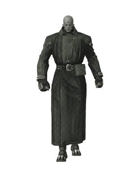
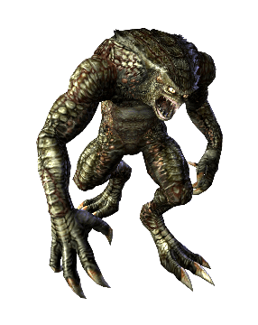
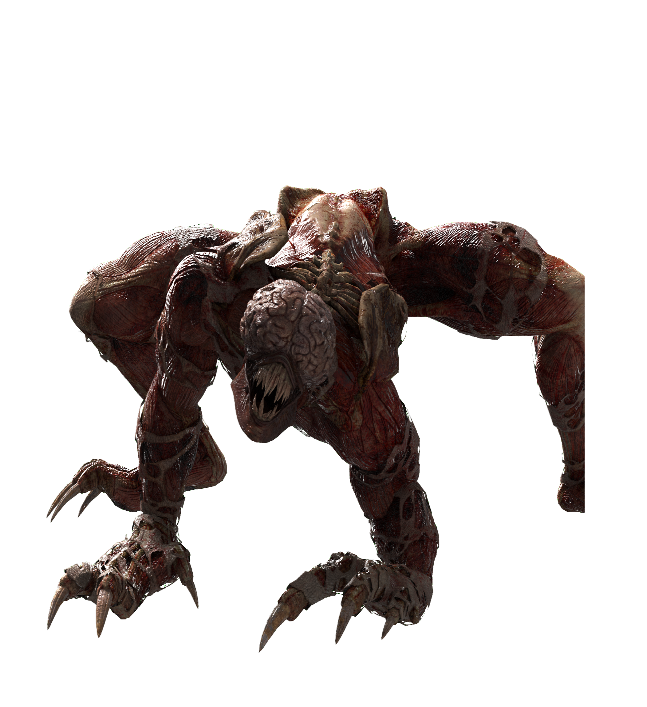
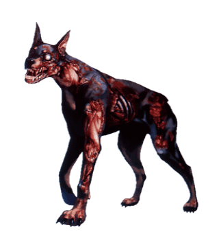

B.O.W.S
Tyrant
Tyrants are mass-produced B.O.W.'s developed by the Umbrella Corporation. They are created using human test subjects which are injected with the T-virus and surgically augmented to produce the perfect super-soldier. Apparently only one in every ten million humans has the potential to become a Tyrant after T-infection, the rest become zombies.

Hunters
The Hunter "α" was the first fully functional and marketable B.O.W. created by Umbrella. These creatures were developed by injecting human embryos with reptilian DNA and administering the T-virus as a bonding agent. The final product was a hunchbacked, lizard-like humanoid with green scales all over its body and long, gangling arms.

Lickers
Created after human T-virus carriers were subjected to secondary infection in a controlled environment. The results were unstable, but months of continued testing resulted in the production of a viable living weapon. The Licker's appearance is truly horrific: multiple layers of skin have receded and torn, exposing the majority of the creature's muscle tissue. Its hands and feet have altered to sport a series of long, razor-sharp claws that allow the creature to crawl on floors, walls and ceilings as well as rip its prey to shreds.

Cerberus
Umbrella originally tested the T-virus on dogs in their laboratory in the Arklay Mountains, hoping to create an enhanced breed that would serve as a bio-organic weapon. They injected the virus directly into their guard dogs and the canines underwent a swift and grotesque mutation. The dogs lost patches of fur and skin, exposing bones and innards. As well as these physical changes, the dogs became increasingly aggressive and bloodthirsty.
